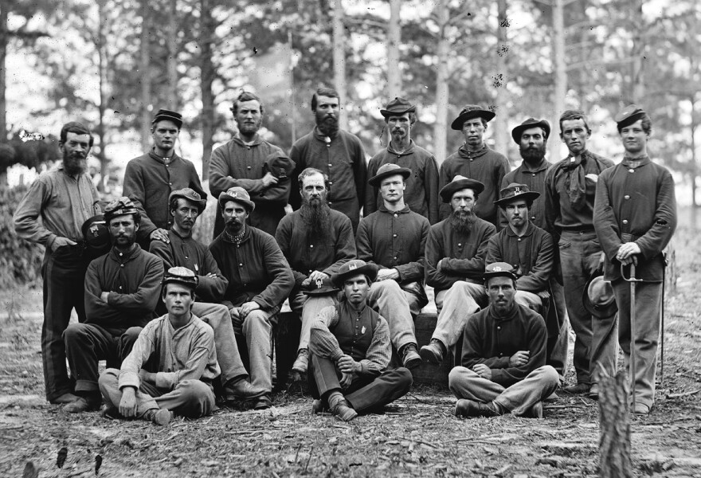

Welcome to Camp!
Hey there, recruit! Ready to be part of something big? Life as a soldier is tough, exciting, and full of adventure. We’re looking for brave folks like you to join our ranks!
In this guide, you’ll learn what to expect, from training and battles to what we eat in camp. By the end, you’ll be prepared to grab your gear and march with us!
Training
Soldiers should expect training to be challenging and rigorous. The training will consist of learning how to march, practice loading and firing guns, practicing drills, and learn to follow orders.
Example of a daily training schedule:
- Marching for hours every day with formations such as marching in column and in a "company front".
- Learn how to move in straight lines as a group.
- Learn how to put up tents and dig trenches quickly.
Uniforms
Union soldiers wear blue, and Confederate soldiers wear gray. The uniforms are made of heavy wool, with leather-billed caps and stiff shoes.
- You will wear a four-button "sack" coat over your cotton or flannel shirt, and trousers held by suspenders.
- The coat will have bright buttons, piping, or badges to indicate your rank.
- The Hardee hat, a wide-brimmed dress hat, is the regulation for the Union army.
- Confederate soldiers preferred the Slouch hat for its comfort, protection from the elements, and versatility.
- Brogan, an ankle-high leather shoe for all soldiers.
Health & Hygiene
Let me be honest — camp life isn’t always clean. But if you’re tough, you’ll be just fine!
- We don’t always have real bathrooms or clean water.
- Sometimes, sickness spreads fast, like typhoid or dysentery.
- But if you keep yourself clean and smart, you’ll stay healthy!
- And don’t worry — everyone deals with a few bugs now and then.
- Stay strong, and you'll survive anything camp throws at you!
- We will provide hospitals, medical treatment, and nurses.
Battles
Ready to prove your bravery? Battles are where heroes are made!
- You will march into battles.
- We use drums and flags to move together, even through all the smoke.
- It’s loud, it’s crazy, but when we win, it feels amazing!
- We fight in open fields — no hiding — just courage and teamwork.
- Stick with your friends, listen to your officer, and you’ll do great.
Camp Life
When we are not fighting, camp becomes our home. You’ll will love it there!
- We eat hardtack crackers, beans, and salty meat — keeps you strong!
- We pass the time by writing letters, playing cards, and telling jokes.
- The tents aren’t fancy, but after a long day, they will feel cozy.
- If you’re handy, you can even build wooden shelters!
- And we have chaplains who keep our spirits high when we miss home.